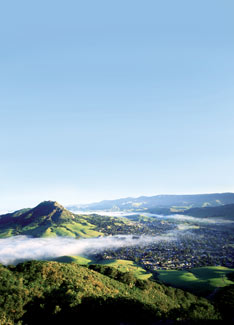

9 Great Places You’Ve Never Heard Of: San Luis Obispo, California
Here’s to slow, sunny living on the coast.
By David Wann
August/September 2008
Mediterranean climate, rarely above the 80s or below the 40s, 315 sunny days a year; beautiful shoreline and countryside vistas; lively community activities and traditions; friendly people, civic engagement, comfortable pace of life … what’s not to like about San Luis Obispo, Calif.?
Elaine Simmer loves to walk her dog along San Luis Creek, which runs past the mission built in 1772. “Spanish missionaries built missions about every hundred miles on the California coast,” she explains, “and many say ours is the prettiest.”
John Ewan, owner of the Pacific Energy Co., likes being less than 10 minutes from rural countryside and a variety of beaches. Pacific Energy has installed hundreds of off-the-grid solar energy systems in SLO, the nickname for the city.
Tourists like to see (and taste) the Central Coast wine country - about 30,000 acres of vineyards (at least 600 of which are certified organic) and close to 100 wineries, including Saucelito Canyon Vineyard, where vines planted in 1879 produce distinctive Zinfandel and Cabernet Sauvignon. They come to kayak, surf and swim at Morro Bay, Avila Beach and Shell Beach; and they come to experience the farmers market that takes place every Thursday night year-round. Many come for agri-tourism, for example, to stay on a lavender farm for a weekend, or visit an olive farm and see how olive oil is pressed.
SLO was the first city in the United States to ban smoking in all public places (1990) and now has an ordinance in place that forbids drive-through access to restaurants. The city has a 1 percent growth limit per year, a high “parks to people ratio” (10 acres of park required per 1,000 residents), and an active cadre of green builders who work with city officials to build LEED-certified buildings.
Bicycling is increasing as a mode of transportation. For example, the Morro Street Bicycle Boulevard gives priority to bicycle traffic - a special traffic signal allows bicyclists to accelerate first. This type of traffic signal, popular in Holland and Denmark, allows cyclists to be better seen by drivers and also makes transportation by bike more functional.There’s only one problem with San Luis Obispo - it has coastal-California cost of living. But the city is working on strategies to make SLO more affordable, so its nurses, teachers and firemen can live where they work.
San Luis Obispo, California
Population: 43,000
Median House Price: $641,800
Climate: Year-round pleasant. January average: 53 degrees; July average: 66 degrees.
Natural Assets: Elevation: 315 feet; 315 days of sun a year; thousands of acres of national forest, state parks, beaches, lakes and mountain ranges make SLO a recreational hub for surfing, kayaking, mountain biking, hiking and wildlife observation.
Sustainability Initiatives: This small city is dense with alternative businesses such as green builders Semmes & Co., Green Car Journal and General LED, a research and sales company that markets energy-efficient LED lighting.
Check out the other towns on our 2009 list of Great Places You’ve Never Heard Of.
David Wann writes and produces documentaries about sustainable lifestyles. His most recent book, Simple Prosperity, is a sequel to the bestseller Affluenza that he co-authored.
|
 DAVID E. GARTH PHOTOGRAPHY San Luis Obispo, Calif.: sun, surf and sustainability. |
 DAVID E. GARTH PHOTOGRAPHY Not your average sidewalk chalk: Artists out on one of San Luis Obispo’s 315 sunny days per year. |
|